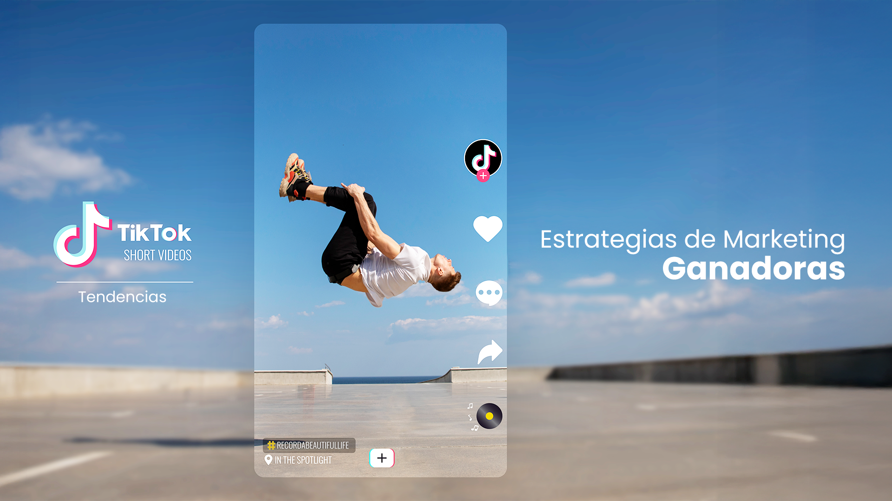
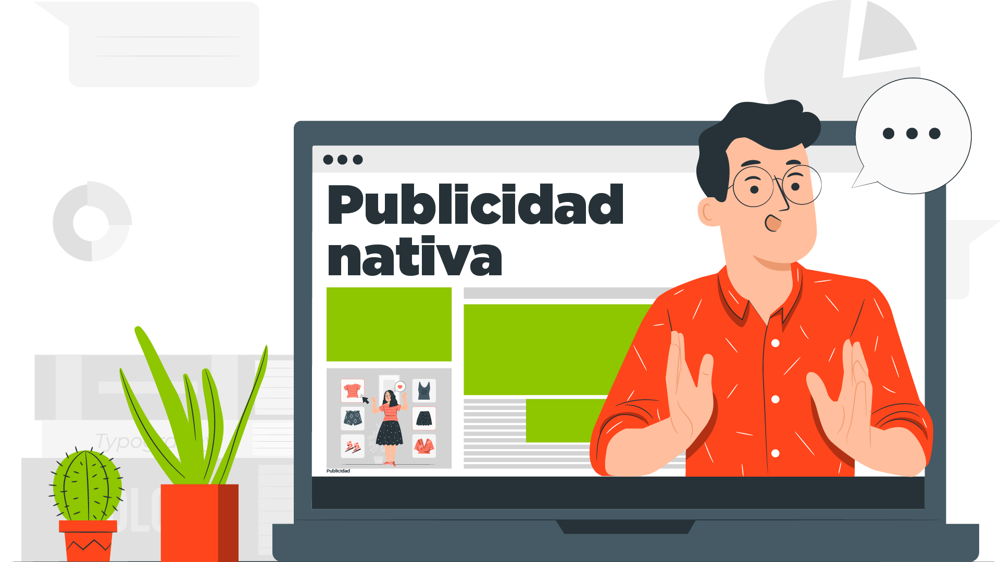

SEO e Inteligencia Artificial: Una Alianza Poderosa
Descubre cómo la inteligencia artificial está revolucionando el SEO. Aprende a integrar IA en tu estrategia digital con TPP y optimiza tu posicionamiento.
El Futuro Sin Cookies: Cómo Aprovechar el Zero-Party Data
Adapta tu marketing al futuro sin cookies con Zero-Party Data. TPP te ayuda a ofrecer experiencias personalizadas y éticas que construyen confianza y lealtad.
Fidelización Digital: Convierte Clientes en Fans
Convierte clientes en seguidores leales con estrategias digitales de fidelización basadas en confianza y personalización. Destaca tu marca con TPP.
Guías y Tutoriales: Contenido de Alto Valor
Aprovecha el contenido educativo: guías y tutoriales que generan visitas constantes. Crea contenido útil y posiciona tu marca en el sector con TPP.
Contenido Evergreen: Crea Tráfico Sostenible
Descubre cómo el contenido evergreen puede impulsar tu visibilidad a largo plazo y asegura tráfico constante. ¡Transforma tu estrategia de contenido ahora!

TikTok Ads: Guía Completa para Anunciantes en 2024
¡Aprende a dominar TikTok Ads en 2024! Optimiza tu estrategia y alcanza resultados excepcionales. Lleva tu marca al siguiente nivel con TPP.

Publicidad Nativa: Conecta y Convierte
Posiciona tu marca con contenido relevante y cautiva a tu audiencia de manera natural con publicidad nativa. ¡Lleva tu estrategia al siguiente nivel!
IA e Influencers: Una Alianza Perfecta
Descubre la receta moderna para contenido viral y éxito en marketing al utilizar influencers e IA. Descubre cómo potenciar tu presencia digital con TPP.
Marketing Viral: Crea Campañas Inolvidables
Descifra el código del marketing viral con TPP. Aprende las estrategias para diseñar campañas que se compartan y se conviertan en fenómenos memorables.
Marketing Digital: 5 Elementos Clave
Atrae, convierte y retiene clientes con estos 5 elementos clave del marketing digital en tu estrategia. Conoce lo necesario para alcanzar el éxito con TPP.
Integra un Enfoque 360 en tu Estrategia Digital
Transforma tu estrategia de marketing digital con TPP al integrar un enfoque 360 a tu estrategia digital. Maximiza tu impacto y obtén resultados tangibles.
Potencia el éxito con un ecosistema digital
En un mundo cada vez más digitalizado, es crucial que pensemos estratégicamente en el ecosistema digital para alcanzar el éxito en nuestras organizaciones.
Construyendo Marcas Sostenibles
En el vertiginoso mundo del marketing y los negocios, las ventas exitosas no son fruto de la casualidad, sino del resultado de un proceso cuidadoso y estratégico.
Analítica y KPIs en Marketing Digital
En el complejo proceso del marketing digital, hay que prestar atención al ritmo de las métricas de tráfico web. Los datos recolectados ofrecen visión del número de visitantes.
La importancia de la analítica en marketing
En la era digital actual, las empresas se enfrentan a un desafío constante: destacar entre la multitud y alcanzar resultados tangibles en línea con datos sólidos y análisis precisos.
Estrategias de Marketing para Startups
El mundo empresarial está en constante evolución, y los startups se enfrentan a un desafío: destacar en un mercado saturado. El marketing digital es clave para impulsar el crecimiento.
El Poder de la Consultoría en Marketing Digital
La consultoría en marketing digital emerge como el catalizador clave para amplificar la presencia y consolidar marcas en el vasto mundo digital.
Cómo Crear una Estrategia Digital Efectiva
En la era digital, una estrategia de marketing efectiva es fundamental para destacar y aprovechar las herramientas de marketing digital adaptadas al cambio.
5 tendencias a tomar en cuenta en lo que queda del 2022
Una tendencia es una corriente y la mejor forma de sobrevivir es no nadar en contra de ella. Identificarlas a tiempo es imprescindible en marketing.